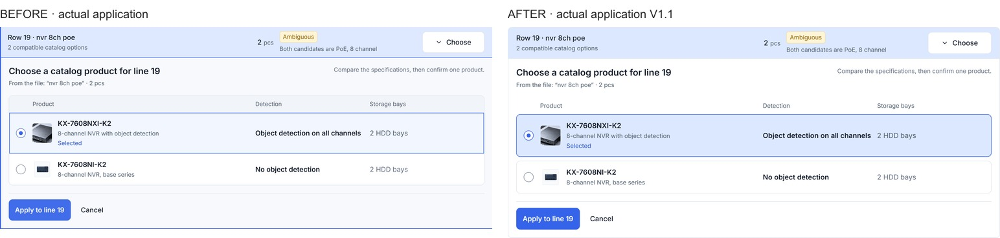
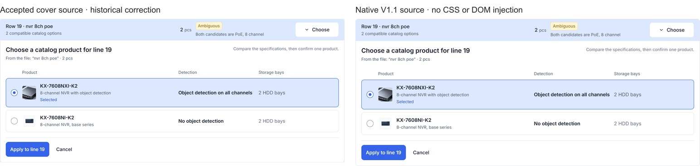
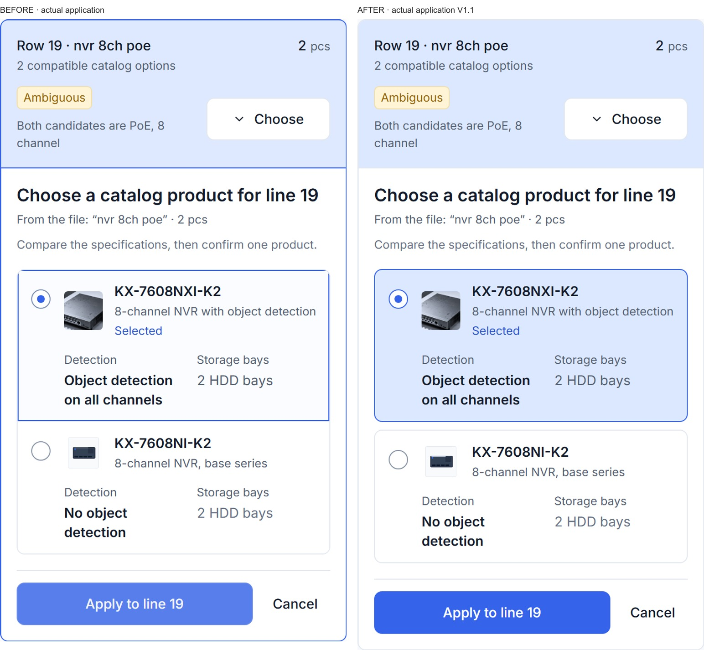
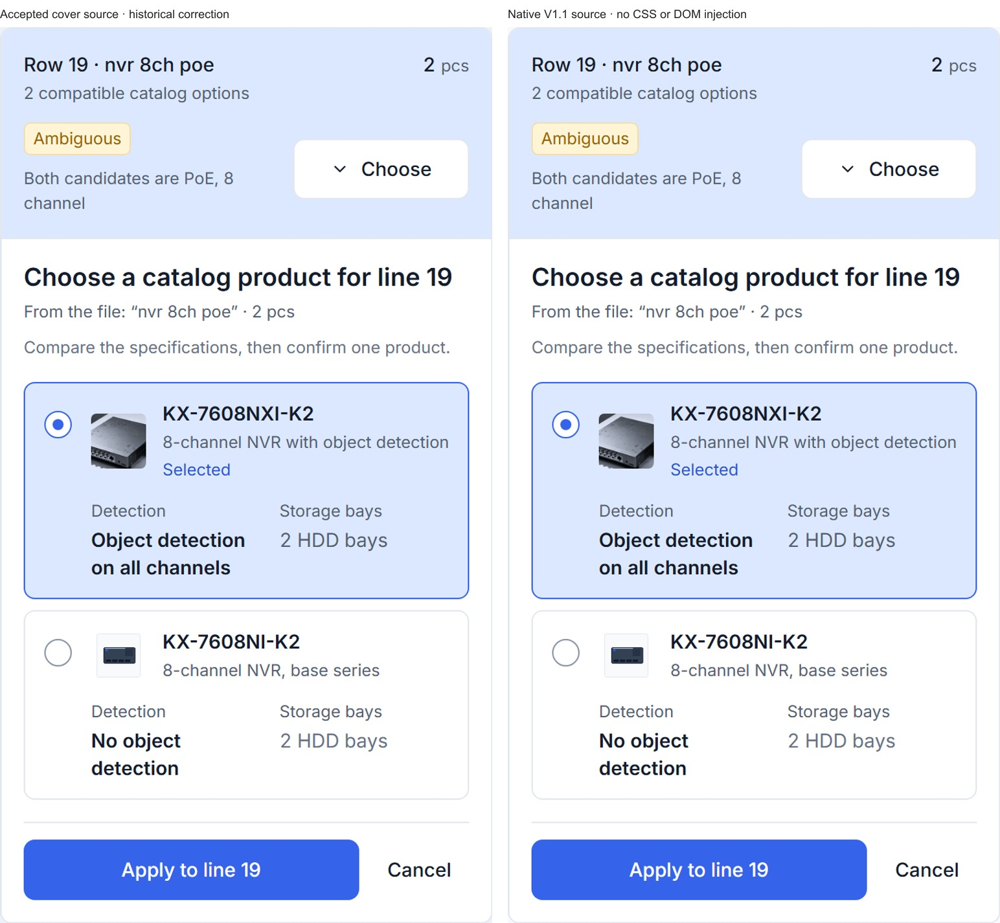
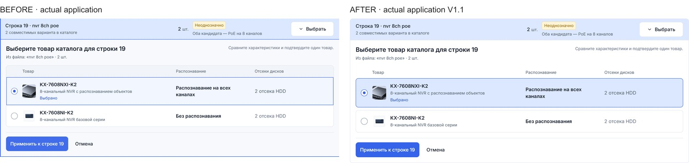
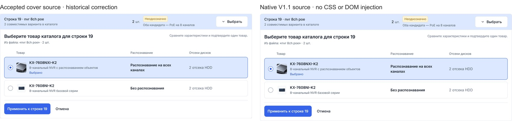
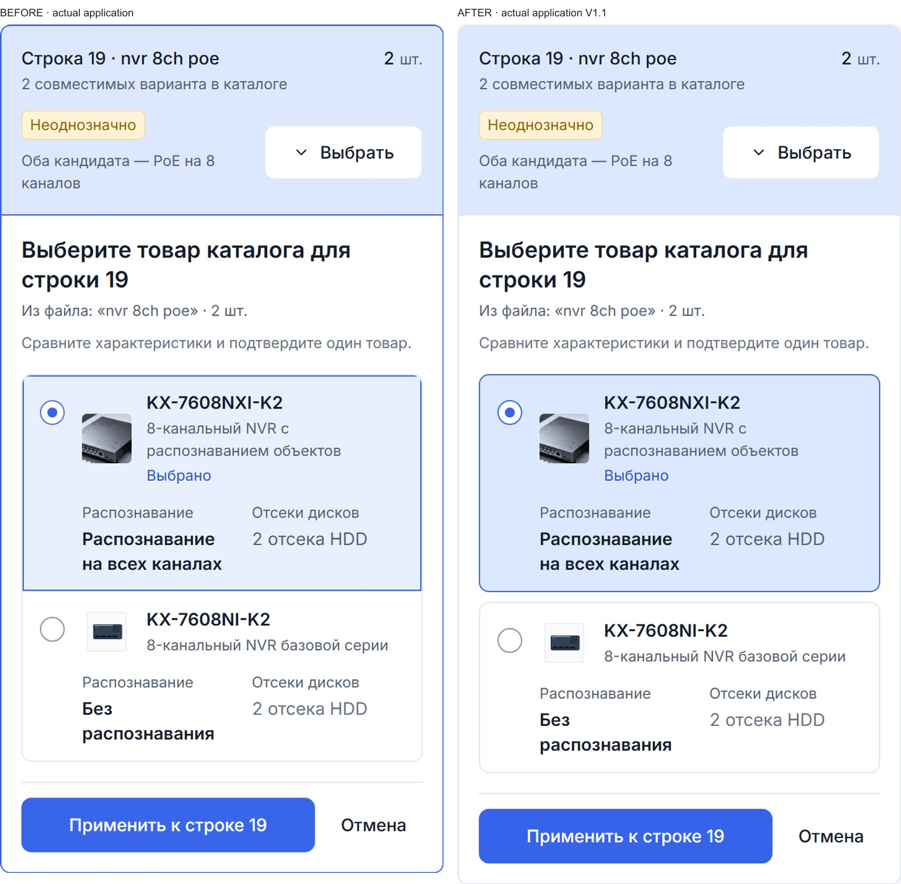
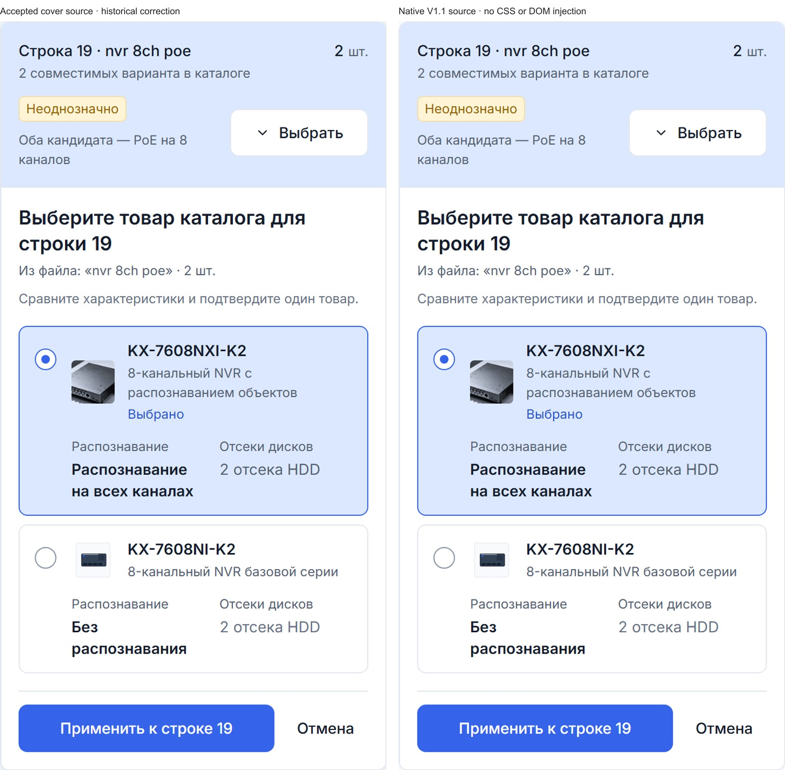

B2B Portal Source UI Fix V1.1 · portfolio parity
Independent source-parity review pending. The accepted Agent Ops, portrait, Pawly, Vet and all other source/media remain unchanged. Only the four Portal Home captures and their registry entries change.
Raw native PNGs are retained untouched. The WebP presentation cutout follows the application's measured rounded silhouette; every opaque RGB pixel is verified equal to the native screenshot. No capture-time CSS, text replacement or DOM assembly.
Report · Source SHA and image provenance · Scope verification
EN · 1280px · Product before-after

EN · 1280px · Product accepted-parity

EN · 390px · Product before-after

EN · 390px · Product accepted-parity

RU · 1280px · Product before-after

RU · 1280px · Product accepted-parity

RU · 390px · Product before-after

RU · 390px · Product accepted-parity
